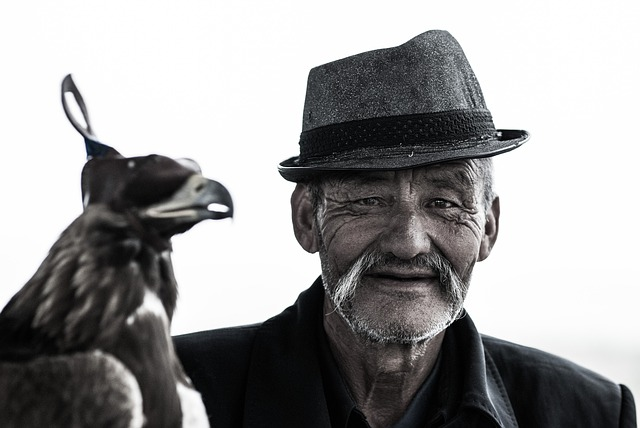

Darek Edgeworth
*de repente aparece un señor frente a ti*

hola.....
espero no asustarte con esta visita inesperada
queria hablar contigo antes pero se me hacia imposible hasta ahora...

Darek Edgeworth es un viajero y escritor de 85 años residente de wuhan
hoy entrevistaremos a el señor Darek Edgeworth que actualmente vive en narnia reconocido por tener el record de mas lugares visitados por una sola persona y por sus grandes libros de fantasia
*despues de un rato buscando encuentras una casa azul identica a la descripción de pedro
cuando llegamos a la residencia del señor Darek se encontraba acariciando a su gato "copito" aun que contesta al nombre de "piojoso" el cual de vez en cuando relata en sus libros como un ser mitologico
cuando el señor derek nos noto pudimos comenzar la entrevista
de los lugares que visito algunos me gustan tanto como para relaizar un libro ya sea por la gente que conoci alguna zona en especifico que vi o alguna historia que escuche
porque soy muy timido para pedirle a alguien que me acompañe es mas como bien sabe la mayoria antes era mucho mas timidio pero todo eso cambio despues de que fui a una terapia ..... solo tuve que esperar 5 años para que pudiera superar mi timides
el señor derek a visitado muchos lugares a lo largo de su vida de los cuales de la gran mayoria saca la inspiracion para realizar sus grandes libros de fantasia entre los cuales se encuentran :
brawhala: conocido por sus lugares turisticos y tan variados fue de este lugar que darek saco su libro con el mismo nombre el cual relataba la historia de un joven de la zona.
pandaria: refugio realizado para proteger a los pandas en peligro de extincion
entre otros muchos tambien suele frecuentrar zonas segun nos dice es debido a que lo ayudan a relajarse como su lugar natal Azeroth y otros lugares como ricaurte, durotar y ayaviri.
*de repente aparece un señor frente a ti*
hola.....
espero no asustarte con esta visita inesperada
queria hablar contigo antes pero se me hacia imposible hasta ahora...
tenia de pequeño amigos tales como
era su mejor amigo hoy le preguntamos lo siguiente
era alguien bastante sociable todo lo contario a como es ahora, incluso de pequeño le gustaba bastante escribir pero evidetenmente no sus historias no eran tan buenas como las que hace actualmente